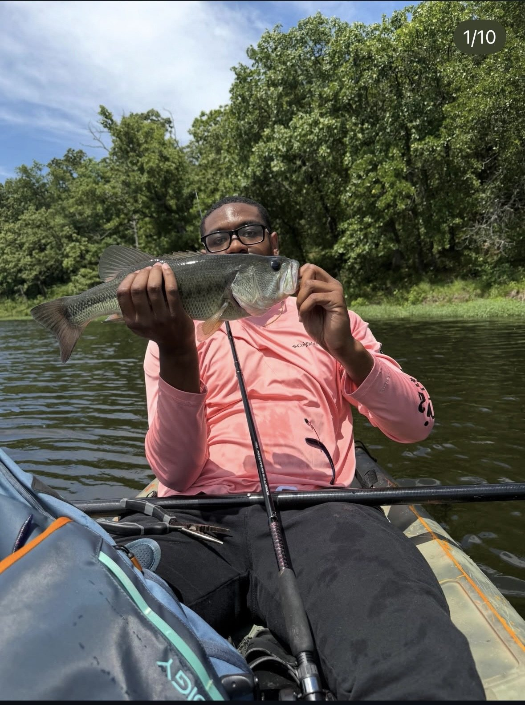
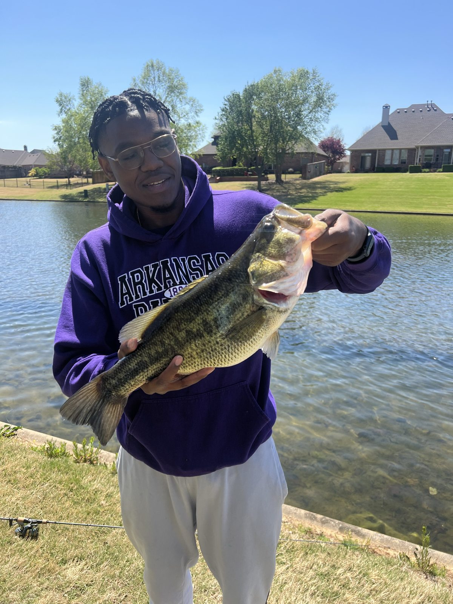
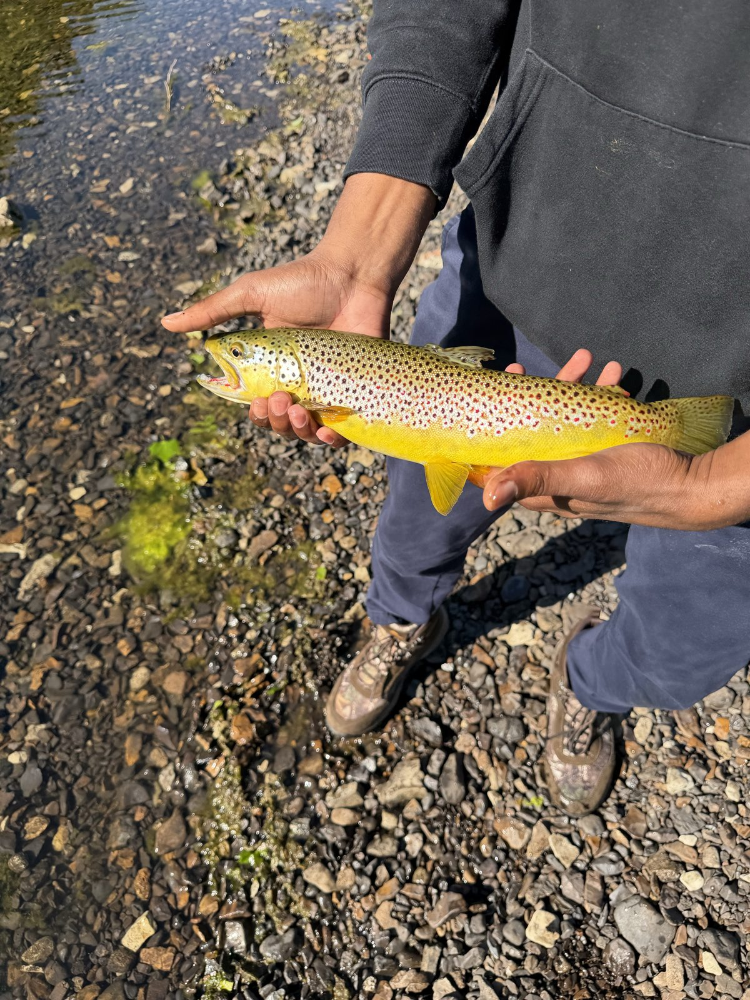
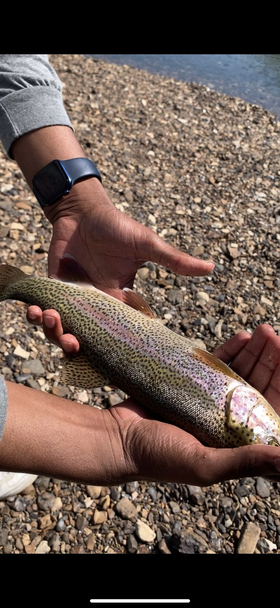
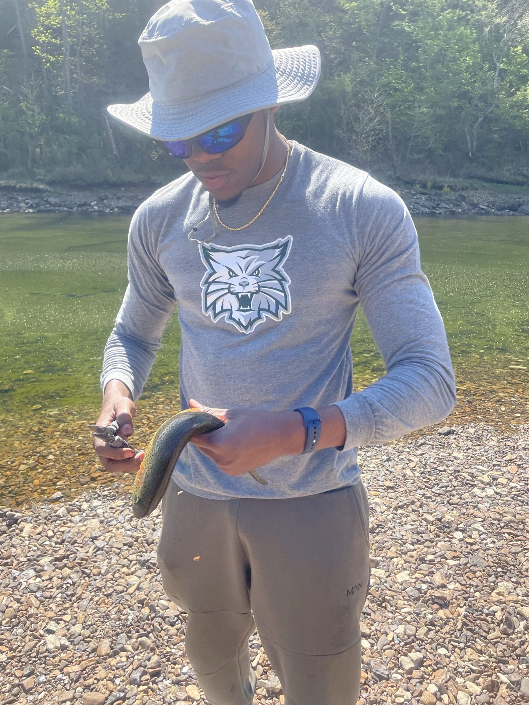
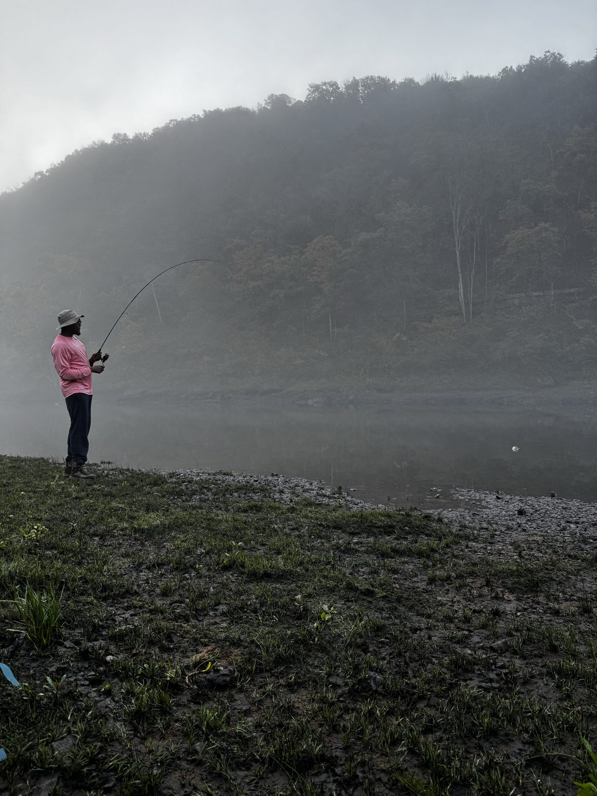
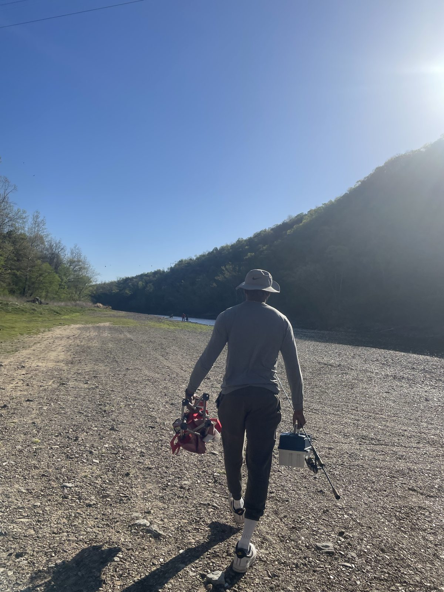

A collection of my favorite bass and trout catches and moments spent out on the water.
Bass Gallery | Trout Gallery | On the Water
Some of my favorite bass catches.


Some of my favorite trout catches.



Some memorable moments spent fishing.

